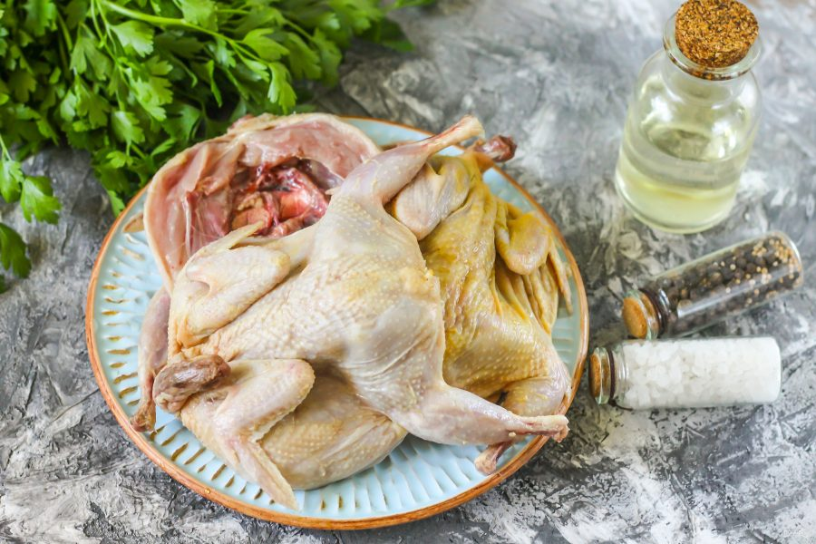
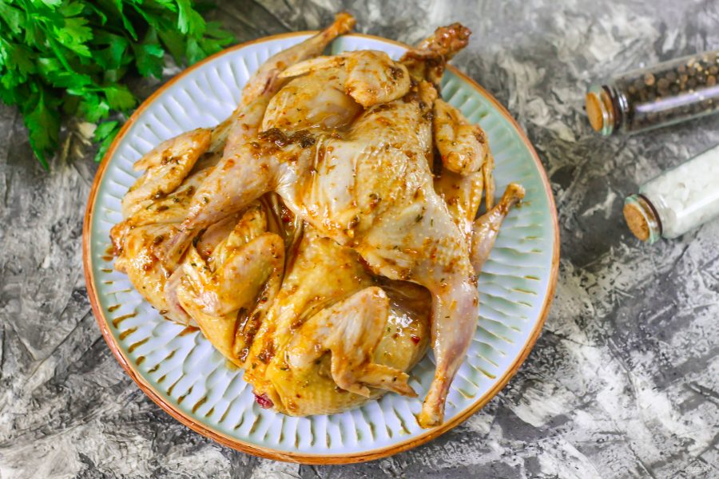
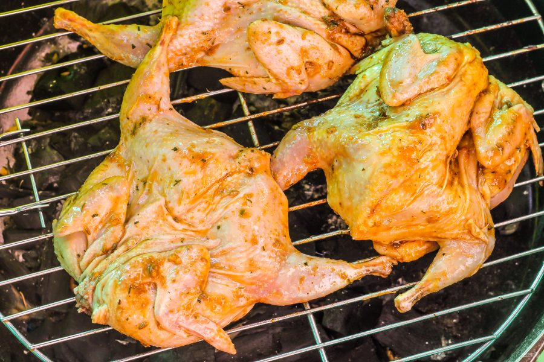
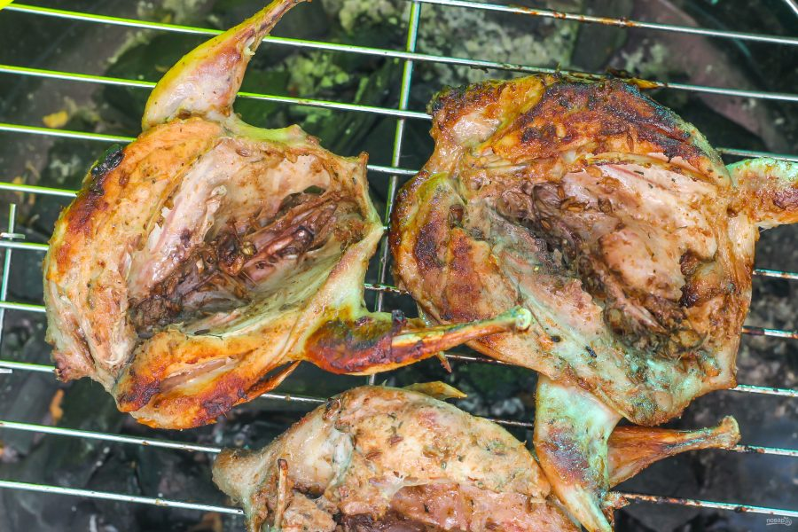
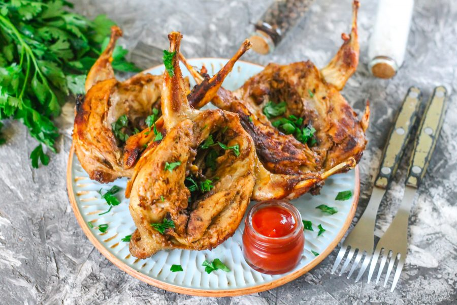

ОПИС ПРИГОТУВАННЯ
Неймовірно смачне гаряче блюдо з перепелів по достоїнству оцінять чоловіки, особливо під келих охолодженого пива
Не забудьте про різні соуси і соління — вони стануть ідеальним дуетом для смаженої на мангалі птиці.
За бажанням тушки перепелів можна замаринувати і на всю ніч, помістивши їх в холодильник.
Але перед приготуванням не полінуйтеся їх дістати і прогріти при кімнатній температурі близько 1 годину,
щоб м'ясо не залишилося сирим усередині після прожарювання!
- Перепілка— 3 Штуки
- Масло Рослинне— 60 Мілілітрів
- Паприка Солодка Мелена— 1 Чайна Ложка
- Часник Сушений— 0,5 Чайних Ложки
- Приправа Для Курки— 1 Ст. Ложка
- Сіль— 2 Щіпки(В Залежності Від Смаку Приправи)
- Мелений Чорний Перець— 4 Щіпки
Підготуйте зазначені інгредієнти.
Приправи та спеції подрібніть, змішайте з рослинним маслом без запаху. Кількість солі додавайте виходячи з смаку приправи для курки. Найчастіше в приправі сіль вже присутній!
Ретельно промийте тушки перепелів і обсушити паперовими рушниками. Розріжте по грудях і розпластайте плазом.
Повапните тушки приготовленої сумішшю. Помістіть в глибоку миску і залиште на 30-40 хвилин, щоб тушки ввібрали в себе часниковий аромат.
Розжарити мангал або гриль, викладіть перепелів спочатку шкіркою верх і обсмажте близько 10-15 хвилин. Час безпосередньо залежить від створеного вами спека в мангалі.
Намагайтеся не залишати їх на прямому вогні, інакше тушки обвугляться, а всередині не прожаряться. Переверніть їх на спинку і обсмажте ще 10-12 хвилин.
Запечених перепелів з мангала подавайте відразу до столу, присипавши подрібненою зеленню. Вони ідеальні з соусами і келихом пінного пива!